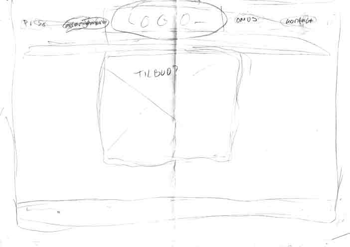

I Beefeater øvelsen skulle vi lave et wireframe til en ny opsætning af siden www.beefeater-pub.dk. Det var en god måde at lære om hvordan wireframes fungerede, og at se processen fra at have hjemmesidens layout på papir, til at man rent faktisk ser det på hjemmesiden.
 Vi kodede siden, hvilket var helt vildt lærerigt for mig. Jeg havde ikke helt forstået hvad id og classes var og hvordan de fungerede, hvilket jeg fik styr på i denne øvelse.
Derefter skulle vi prøve at bruge flexbox på siden, hvilket også var en god måde at øvelse sig i flexbox på, for der var ikke rigtigt nogle retningslinjer for hvad der skulle i flexboxes, så her skulle man selv overveje hvad der overhovedet gav mening at komme i flexboxes, hvilket jeg synes giver en bedre forståelse af hvornår og hvorfor man bruger det.
Selve designet af siden er ikke kønt, men vi havde det sjovt med at udforske og lege med kodning, og se hvad der kunne fungere hvor.
Jeg har valgt at skrive om denne øvelse, da vi ofte bruger flexbox, og denne øvelse var det der gjorde, at jeg fandt ud af hvordan det fungerede og hvad man brugte det til, så i forhold til at lære flexbox var denne øvelse utrolig vigtig.
Desuden havde jeg som sagt tidligere, ikke så godt styr på id og classes, og det var i denne øvelse jeg endte med at forstå hvorfor og hvordan man brugte det, og igen er disse to tags nogle man bruger en del, så at have styr på dem, var igen ret vigtigt.
Denne øvelse var altså mere en sjov, lærerig og super vigtig leg med kode for at forstå, hvordan flexbox virkede, end det var et flot og lækkert produkt med en perfekt kode.